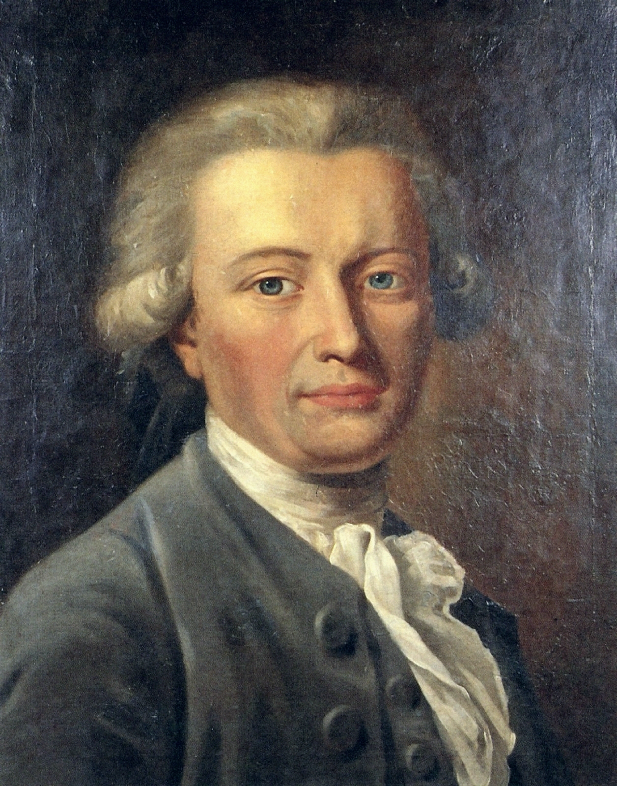

Über Georg Forster (1754-1794)
Johann Georg Adam Forster (1754–1794) war ein deutscher Naturforscher, Reisender, Ethnologe, Schriftsteller und Revolutionär der Aufklärung. Geboren im Jahr 1754 in Mokry Tambow (Russland) und verstorben 1794 in Paris, zählt er zu den bedeutendsten deutschsprachigen Popularaufklärern. Als einer der ersten wissenschaftlichen Reiseschriftsteller trug er maßgeblich zur Verbreitung geografischer, ethnologischer und naturwissenschaftlicher Erkenntnisse bei.

Kurze Biografie
- Kindheit und Ausbildung:
Geboren 1754 in Mokry Tambow (Russland), wuchs Georg Forster in einem wissenschaftlich geprägten Umfeld auf. Sein Vater, Johann Reinhold Forster, führte ihn früh an Naturforschung und Sprachen heran.
- Reise mit James Cook (1772–1775):
Mit nur 17 Jahren begleitete er James Cooks zweite Weltumseglung und dokumentierte Pflanzen, Tiere und fremde Kulturen. Seine Erlebnisse veröffentlichte er später in A Voyage Round the World.
- Leben als Wissenschaftler und Autor:
Forster arbeitete als Professor in Kassel und Wilna und verfasste zahlreiche Werke über Natur und Gesellschaft.
- Politisches Engagement und Exil:
In Mainz setzte er sich für die Ideale der Französischen Revolution ein. Nach dem Scheitern der Mainzer Republik floh er nach Paris.
- Tod in Paris (1794):
Dort starb er im Alter von 39 Jahren während der Französischen Revolution – arm, aber mit einem bleibenden Erbe als Wissenschaftler und Schriftsteller.